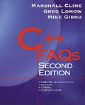

Yes, the book is C++ FAQs by Cline, Lomow, and Girou, Addison-Wesley, 1999, ISBN 0-201-30983-1.
The book has achieved a five-star rating (![[*****]](stars-5-0.gif) ) on
Amazon.com, and is available in bookstores. Here is
the book at
Amazon.com, and here is
the book at BarnesAndNoble.com.
) on
Amazon.com, and is available in bookstores. Here is
the book at
Amazon.com, and here is
the book at BarnesAndNoble.com.
Here are some excerpts.
(CENTER()CENTER)
[ Top | Bottom | Previous section | Next section ]
Yes there is a big difference.
At last count, the C++ FAQ Book is 500% larger than the C++ FAQ Lite.
Bottom line: the book and this Lite document are not the same. The book is both broader and deeper — it covers subjects that aren't covered in this Lite document, and it covers subjects in more detail than this Lite document.
In addition, the book has lots and lots of programming examples — much more than are in this Lite document.
[ Top | Bottom | Previous section | Next section ]
The book is available in paper form only.
You can buy it at bookstores (such as at Amazon.com or at BarnesAndNoble.com).
[ Top | Bottom | Previous section | Next section ]
 E-mail the author
E-mail the author
[ C++ FAQ Lite
| Table of contents
| Subject index
| About the author
| ©
| Download your own copy ]
Revised Feb 29, 2000